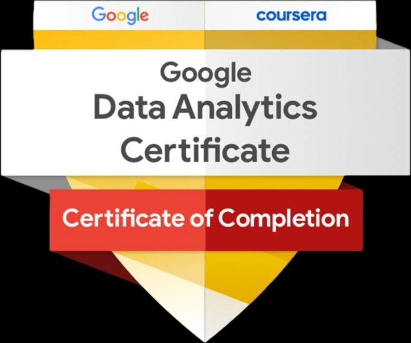

About Me
Data Scientist/Analyst
I am Akshit Modi, currently pursuing a Master’s degree in Biomedical Informatics and Data Science at Arizona State University. With a solid academic foundation in subjects such as Health Informatics, Embedded Machine Learning, and Biostatistics, I have honed my skills to tackle real-world problems using advanced technology. I also hold a Bachelor's degree in Biomedical Engineering from Gujarat Technological University, which provided me with a strong understanding of the fundamentals of engineering and data science. Throughout my studies, I have maintained a high academic.
I have extensive technical expertise in programming languages such as Python, SQL, and R, as well as hands-on experience with machine learning, data wrangling, and project management tools including JIRA and Agile. My proficiency in SQL has been key to my success in analyzing large datasets and optimizing processes, particularly in healthcare and billing operations. In addition, I have earned certifications in AWS Cloud, Machine Learning, Deep Learning, and Google Data Analytics, which have equipped me with cutting-edge skills in data analysis and cloud computing.
My Skills/Honors
Programming & Database Tools: Python (Scikit, NumPy, NLTK, Spacy, Matplotlib, TensorFlow, Pandas), R, SAS, C, Java, SQL
Other Skills: Agile, JIRA, Git, AWS, Statistical Analysis, Tableau, Power BI, Machine Learning, Deep Learning, Project Management, Revenue Management, Decision Making, Data Modeling, Data Wrangling, Probability, HTML, CSS, Flask
Honros: Secured 3rd place in the Smart Gujarat Hackathon,
top 1% of the Meditab training, five times employee of the month.
Leetcode Top_SQL_50
Python Gold_Badge
AWS CCP Certified
Google Data Analytics